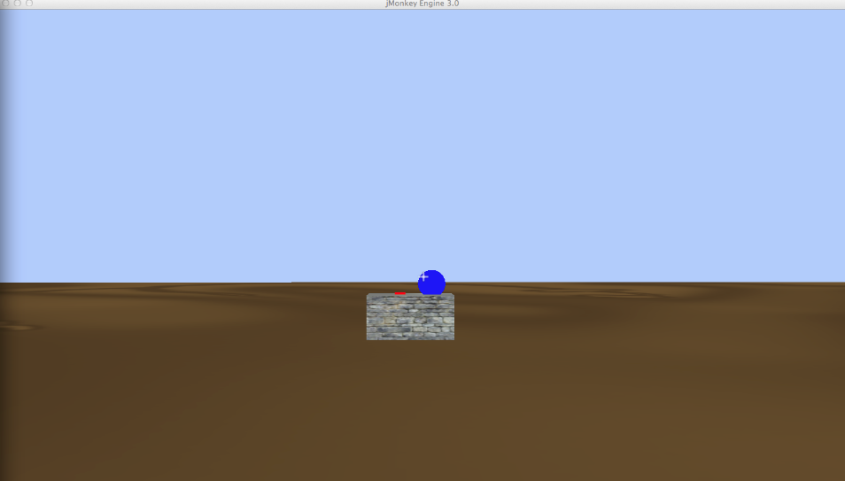

Useful Tips
After you exit or close the APP, the process running them might get stuck. You will need to identify it in your operating system's task manager and "force close" it. Depending on your OS, it will be either the tasks name, WarmUpTask or ALFTask, or simply an instance of your local jre run.
Link to the ContextClient.
Prerequisites
Get the simulator from http://itu.dk/people/ksza/bodysim/wamup
If this demo app won't start, please refer to the Exceptional Cases section.
Warm-up
This first scenario is ment to make you familiar with the simulator's concepts and interactions. The environment is made up by two tables; the first table has two items on it: a pen and a small statue. The other table is empty. All entities in this scenario can be interacted with!
Your task is to walk around and interact with the environment while observing the SSM spaces in the ContextClient. N.B.: The client is automatically refreshed every second. As part of the actions you carry out, please try out the followings:
- 1. Slowly move towards Table1. At certain distances the PerceptionSpace, RecognizableSet and ExaminableSet will be populated.
- 2. Try interacting with the pen while it IS NOT part of the ActionSpace. You are informed that the agent is too far!
- 3. Try interacting with the pen while it IS part of the ActionSpace. The pen gets picked up!
- 4. Move with the pen towards Table2. While Table2 IS NOT in the ActionSpace, try to interact with it. You are informed that the agent is too far!
- 5. While Table2 IS in the ActionSpace and with the pen picked up, try to interact with the table. Table2 is a surfaces and the pen can be placed onto it!
- 6. While not holding anything in your hands and while Table2 IS in the ActionSpace, try to pick it up. Table2 is too heavy for the agent carry!
- 7. Move towards the Statue until it's in the ActionSpace and try to interact with it. Interacting with the Statue requires a different implementation than the standard piking up object which is not implemented in this iteration!
- 8. Pick up the pen. With the pen picked up and the statue in the ActionSpace, try to interact with the Statue. You can't, because Statue is not a surface. Future releases will handled this more complex scenario as well!